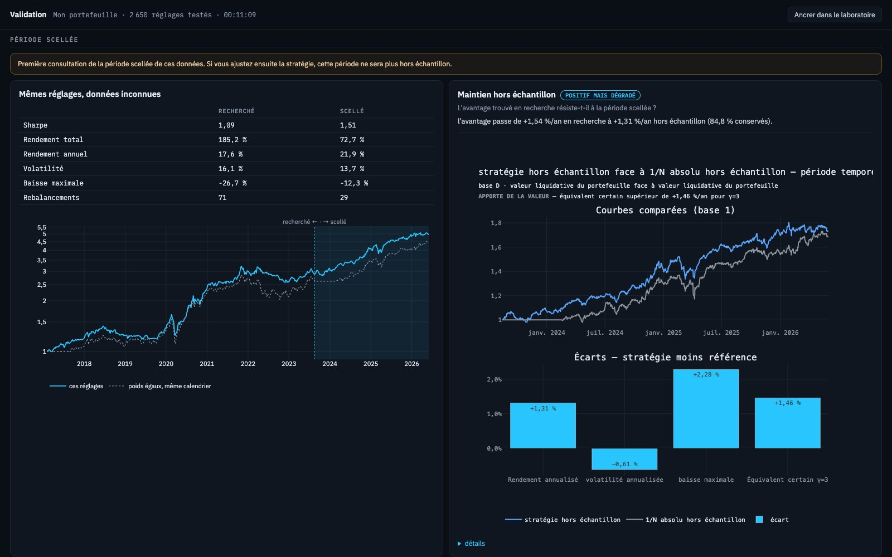

de portefeuille
Conçu pour les professionnels
Mettez votre allocation à l’épreuve avant que les marchés ne le fassent.
Construisez et testez vos stratégies d’allocation multi-actifs. Analysez leurs performances, mesurez les risques et comparez vos décisions dans un même environnement de recherche.
Comment ça marche
Déposez une stratégie, FORGE rend son verdict.
Explorez vos allocations. Mesurez leurs limites. Affinez vos décisions.
Exemple : simulations réelles de la démo ci-dessous, sur la période d’étude février 2017 → août 2023 ; la suite reste verrouillée pour la validation.
Avant le déploiement · test 1 sur 12
La période verrouillée, ouverte une seule fois.
La recherche s’arrête en août 2023. La suite reste scellée jusqu’à ce que vous l’ouvriez, pour voir comment la stratégie se comporte sur des données qu’elle n’a jamais vues.


Hors échantillon : 21,9 % par an, volatilité 13,7 %, baisse maximale −12,3 %. 85 % de l’avance sur le 1/N est conservée.
Avant le déploiement
Une bonne performance ne suffit pas. 12 tests de robustesse.
Une stratégie performante sur le passé ne l’est pas forcément dans d’autres conditions.
FORGE la soumet à 12 tests de robustesse : données hors échantillon, autres actifs, Monte-Carlo, stress tests et sensibilité des paramètres.
Des milliers de simulations en quelques secondes pour mettre votre stratégie à l’épreuve avant que les marchés ne s’en chargent.
En voici deux :
Avant le déploiement · test 2 sur 12
La même allocation, sur 80 paniers inconnus.
Sans modifier aucun paramètre, FORGE teste l’allocation sur 80 paniers tirés au hasard dans un univers d’actifs réservé à la validation.
Chaque résultat est comparé à son propre 1/N pour déterminer si la performance provient réellement de la méthode d’allocation ou simplement du choix des actifs.
L’éditeur
Chaque stratégie est du code, lisible et modifiable.
Ce que votre IA écrit arrive directement dans l’éditeur de FORGE, organisé dans un arbre : indicateurs, allocateur, paramètres, graphiques.
Conçu pour faciliter la programmation, cet environnement vous permet de développer, modifier et tester librement vos idées, avec une IA ou directement dans le code. Chaque modification peut être simulée immédiatement.
Projet indépendant
Un point de départ.
FORGE est un projet que j’ai conçu et développé pour explorer une conviction : les outils d’analyse doivent s’adapter aux besoins des gestionnaires, et non l’inverse.
De la modélisation financière à la simulation de stratégies, en passant par l’automatisation et l’analyse des risques, je développe des solutions pour répondre à des problématiques complexes et spécialisées.
Je recherche un stage de 6 mois dès janvier 2027, au sein d’une équipe de gestion d’actifs ou d’ingénierie financière.
La suite : sous le capotTrouvé : meilleure que le 1/N sur les quatre mesures
Prochaine étape : les 12 tests de validation →